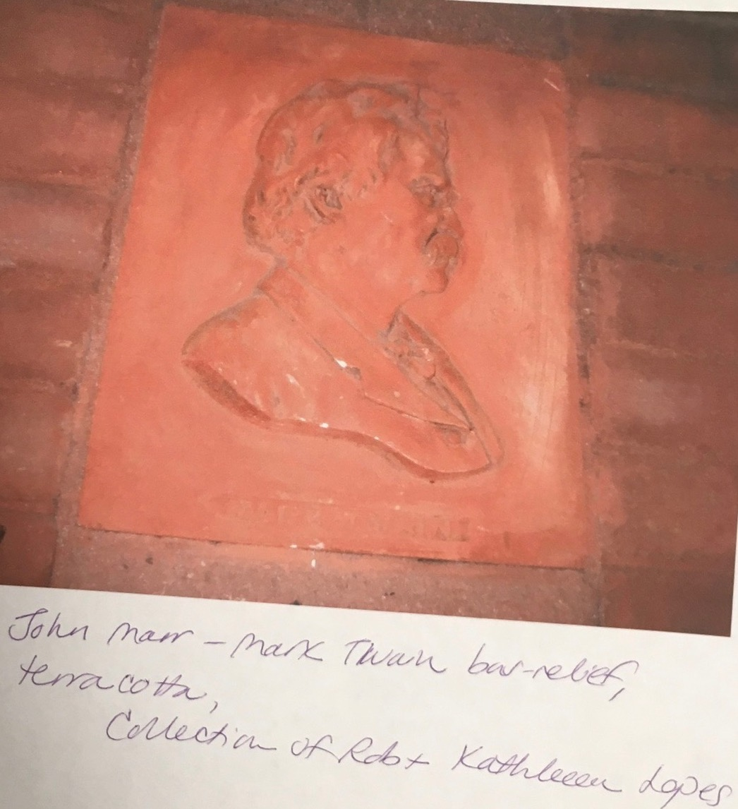

{kind=link}
{kind=link}
{kind=link}
Biography of John (Johann) Marr
Born 1832 in Benshausen, Germany Died 1921 in Milwaukee, Wisconsin
The following section is derived from the Museum of Wisonsin Art Marr biography1
Johann Marr grew up destitute in Germany. Marr writes of a flood that destroyed his family home, the diseases that took three of his siblings' life, and a famine which left him to go to bed hungry some nights. As a young boy, during his school days, Marr cared for the property of a jeweler and engraver in exchange for room and board. This jeweler and engraver became the mentor of Marr and taught him the trade over five years. In 1850, Johann then emigrated to the United States via New York and later left to Hartford, Connecticut to work as an engraver. He worked as an engraver at the Colt gun factory in Hartford for five years. Below is an example of the type of engraving work that Marr did between 1850 and 18562:
Then in 1856, Marr moved to Milwaukee with his new bride, formerly Miss Bodenstein. It was there that Marr set up an engraving practice with a Danish engraver named Peter L. Mossin. The firm was called "Mossin & Marr" and it became one of the main producers of dies that were used to stamp Civil War era tokens. One of these engraved Civil War tokens from 1863 can be seen below.2

In 1858 John's first son, Carl Marr, was born. The wooden home where Carl Marr was born in and where John and his wife lived for a long time in the upper story is pictured below.2
Carl Marr would later become one of Wisconsin's most notable artists, establishing himself in Munich, Germany.
In 1880 Johann Marr, later known as John Marr, went into partnership with an American xylographer (wood engraver) named Richards. During this period, newspapers and other publications would hire engravers to engrave pictures on woodblocks, which would be used to print illustrations for publications.
Despite primarily being known as a commercial engraver, John Marr was also a competent sculptor. He created relief sculptures of family members and portraits of prominent Milwaukee citizens such as Frederich Ludwig Jahn, founder of Milwaukee's Turner Hall. Two of these works is pictured below.2 Few examples of Marr's plaster casts, such as that of Jahn, remain today and most are in the Museum of Wisconsin Art, West Bend Art Museum collection.

Prior to the rediscovery of the Columbia University Edward Allis bust, it was not known if any bronze castings were made of Marr's work. Columbia thus holds a unique piece by Marr which highlights a new media Marr's work took shape in.
1 Marr, John, My Life - An Autobiography by John Marr.
2 West Bend Art Museum, My Life, an autobiography by John (Johann) Marr, 1998.